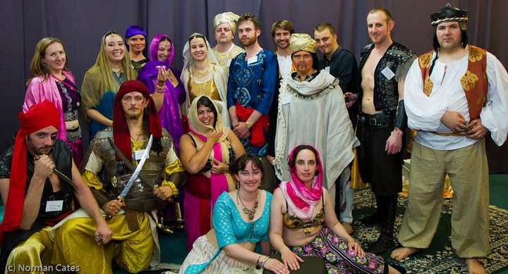

Al-Shir Ma
Author
By Ellen Boucher, Dale Elvy and Sophie Melchior
Background
This is the story of the town of Al Shir-Ma; a tale of great deeds, high adventure and deep sorrow, for the fate of Al Shir-Ma is the greatest mystery of all.
Deep within the sifting sands, Al Shir-Ma was the Sultan's great prize, an oasis for the parched, a refuge for the desperate and a blessing for the devout. Since time immemorial the town’s great fountain spilled fine, clear water for all. The people of Al Shir-Ma were wealthy, trading marvellous treasures with the great caravans and bartering lost secrets and mysteries with the fierce desert tribes. Merchants, scholars, magicians and nobles; all were welcome in Al Shir-Ma.
It is said that it was not the Sultan’s protection, nor the wealth of the Merchant Princes that made Al Shir-Ma great, but the very masters of the desert, the mighty Djinni themselves, who walked the streets and worked great magics upon the town.
Why did the Djinni do such things? Who can say? Perhaps they had dwelt in the town before the people arrived. Perhaps they had struck a bargain with the Sultan, for many whispered that they lived amongst the people as any citizen might, or, perhaps they were waiting for something beyond mortal comprehension.
What is known, is that a great calamity was visited upon Al Shir-Ma. One fateful day the great fountain in the town square stopped flowing and the people of the town were struck by one tragedy after another. They faced their greatest trial, and they did so alone, for the Djinni had disappeared.
But, of course, our tale is just beginning...
Costume
The game is mostly medium-high costume, some higher-fantasy than others, though there are some lower characters available and getting a costume for most characters should be fairly straight-forward.

Al-Shir Ma - The Royal Court - Kapcon 2011. Photograph by Norman Cates.
About
Originally written for KapCon 2011, Al Shir-Ma is inspired by the Thousand and One Nights, and is set in a mythical trading oasis in the desert. But the city has been abandoned by its magical patrons, the Djinn, its Sultan is gravely ill (some whisper missing), and its water source is drying up.
It offers a rich web of personal relationships, mystery and intrigue, with plenty to appeal to those who like politics, investigation or emotional plotlines.
Characters
A game for 66 players